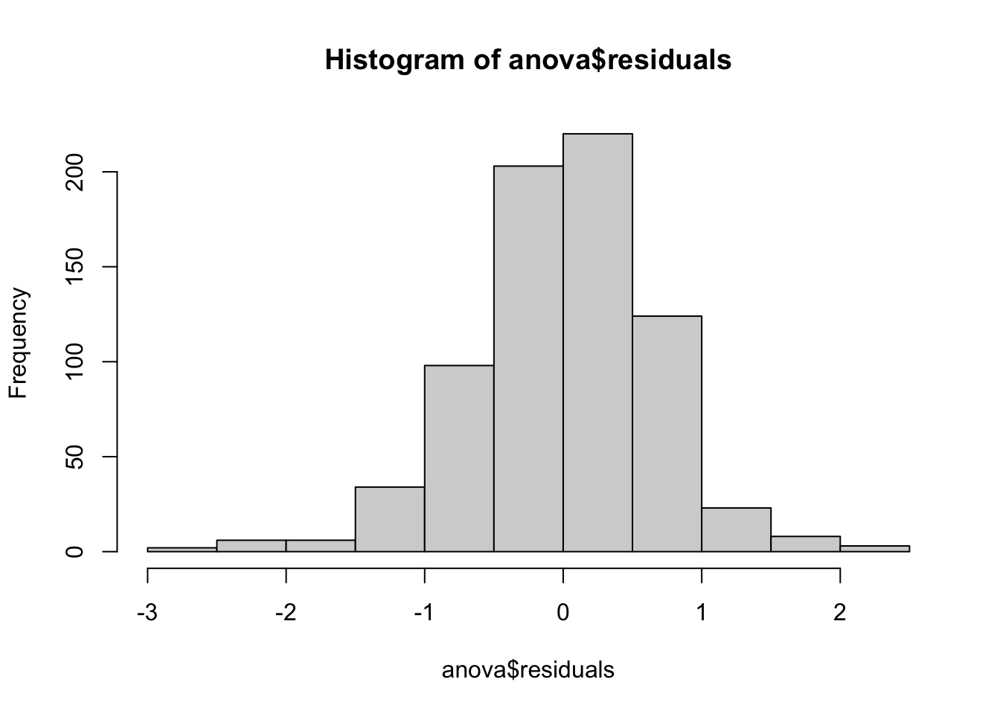

library(tidyverse)
happiness <- read_csv("data/world-happiness-2020-2024.csv")Hypothesis Testing
Hypothesis testing: Two-sample t-test
- statistical test used to determine if there’s a significant difference between the means of two groups
- it helps us decide whether to reject the null hypothesis that any observed difference is just due to chance
The test looks at:
- The difference between the group means (x̄₁ - x̄₂)
- The variability in the data (variance, standard deviation)
- The sample size
t-test assumptions
- we need a numeric continuous variable (the data) and a categorical variable (for Two-sample t-test)
- the data should be approximately normally distributed
- observations are independent of one another
- each subject belongs to only one group
The t-test is fairly robust to minor violations of normality, especially with larger sample sizes (typically n > 30)
Welch Two Sample t-test
The Welch t-test formula (also called Welch’s unequal variances t-test) is:
t = (x̄₁ - x̄₂) / √(s₁²/n₁ + s₂²/n₂)
Where:
- x̄₁ and x̄₂ are the sample means
- s₁² and s₂² are the sample variances
- n₁ and n₂ are the sample sizes
The data
We will be using data from the World Happiness Report for this case study.
Download the data and set it up in your coding environment.
If you have already set the data up, then you can reuse the project you had going.
Null Hypothesis
\(H_0\) (Null Hypothesis): The difference in mean happiness score between Western Europe and South Asia is due to natural variability inherent in the population.
\(H_1\) (Alternative Hypothesis): The difference in mean happiness score between Western Europe and South Asia is real (not due to natural variability).
Hypothesis testing – t-test
two_regions <- happiness |>
filter(regional_indicator %in% c("Western Europe", "South Asia"))
t.test(ladder_score ~ regional_indicator, data = two_regions)
Welch Two Sample t-test
data: ladder_score by regional_indicator
t = -13.546, df = 37.636, p-value = 4.762e-16
alternative hypothesis: true difference in means between group South Asia and group Western Europe is not equal to 0
95 percent confidence interval:
-3.037035 -2.247082
sample estimates:
mean in group South Asia mean in group Western Europe
4.247478 6.889537 Since the p-value is less than 0.05, we can reject the null hypothesis
Null Hypothesis
\(H_0\) (Null Hypothesis): The difference in mean happiness score between the years of 2020 and 2024 is due to natural variability inherent in the population.
\(H_1\) (Alternative Hypothesis): The difference in mean happiness score between the years of 2020 and 2024 is real (not due to natural variability).
Hypothesis testing – t-test
two_years <- happiness |>
filter(year %in% c(2020, 2024))
t.test(ladder_score ~ year, data = two_years)
Welch Two Sample t-test
data: ladder_score by year
t = -0.31048, df = 288.86, p-value = 0.7564
alternative hypothesis: true difference in means between group 2020 and group 2024 is not equal to 0
95 percent confidence interval:
-0.3023198 0.2199362
sample estimates:
mean in group 2020 mean in group 2024
5.486380 5.527572 Since the p-value is greater than 0.05, we are unable to reject the null hypothesis
Absence of evidence is not evidence of absence
“Absence of evidence is not evidence of absence” means that the fact that we haven’t found evidence for something doesn’t prove that it doesn’t exist.
- When we fail to reject the null hypothesis, we shouldn’t conclude that the null hypothesis is true - we can only say we don’t have enough evidence to reject it.
Effect size
- measure of the strength or magnitude of a relationship
- unlike statistical significance (p-values), effect size tells you how meaningful or important a difference is in practical terms
- for differences in group means, we use Cohen’s d:
Where:
- x̄₁ and x̄₂ are the sample means
- s₁² and s₂² are the sample variances
Effect size – Cohen’s d
library(lsr)
western_europe <- happiness |>
filter(regional_indicator == "Western Europe")
south_asia <- happiness |>
filter(regional_indicator == "South Asia")
cohensD(western_europe$ladder_score, south_asia$ladder_score)[1] 3.597635Effect size – Cohen’s d
library(lsr)
year_2020 <- happiness |>
filter(year == 2020)
year_2024 <- happiness |>
filter(year == 2024)
cohensD(year_2020$ladder_score, year_2024$ladder_score)[1] 0.03623506Hypothesis testing – ANOVA
ANalysis Of VAriance (ANOVA):
- a statistical test to determine whether two or more population means are different
The core concept is comparing:
- Variation between groups (how different the group means are from each other)
- Variation within groups (how spread out the data is within each group)
Hypothesis testing – ANOVA
- ANOVA calculates an F-statistic: the ratio of between-group variance to within-group variance.
- A large F-value suggests the differences between/across groups are meaningful rather than due to chance.
- If the null hypothesis is rejected, it means that at least one group mean is different from another, but not necessarily that all groups are different from each other. – ANOVA indicates whether there’s a difference somewhere, we don’t know where
ANOVA – assumptions
- ANOVA requires one categorical variable and one numeric variable
- observations are independent of one another
- each subject belongs to only one group
- there should be no outliers
- residuals should follow approximately a normal distribution
ANOVA is also fairly robust to minor violations of normality, especially with larger sample sizes (typically n > 30)
Null Hypothesis
\(H_0\) (Null Hypothesis): The variables region and happiness score are independent. The difference in scores across different regions was due to natural variability inherent in the population.
\(H_1\) (Alternative Hypothesis): The variables region and happiness score are not independent. The difference in scores across different regions was not due to natural variability.
Hypothesis testing – one-way ANOVA
One-way ANOVA: Examines the effect of one independent variable on the response (dependent) variable
anova <- aov(ladder_score ~ regional_indicator, data = happiness)
summary(anova) Df Sum Sq Mean Sq F value Pr(>F)
regional_indicator 9 562.6 62.51 133.8 <2e-16 ***
Residuals 717 335.1 0.47
---
Signif. codes: 0 '***' 0.001 '**' 0.01 '*' 0.05 '.' 0.1 ' ' 1Distribution of residuals
hist(anova$residuals)